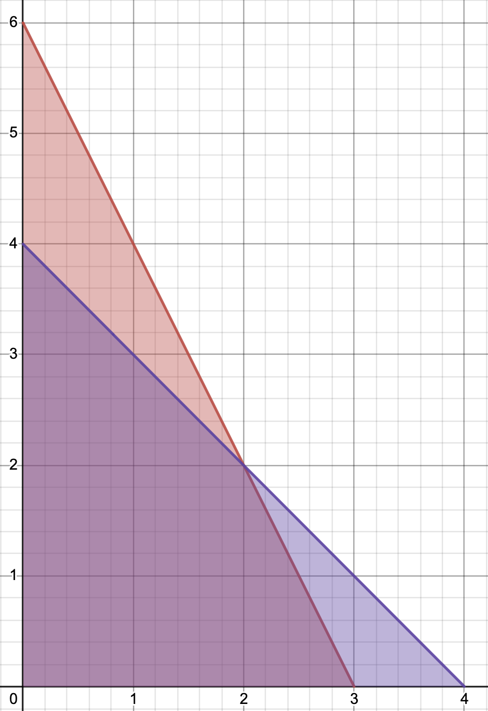
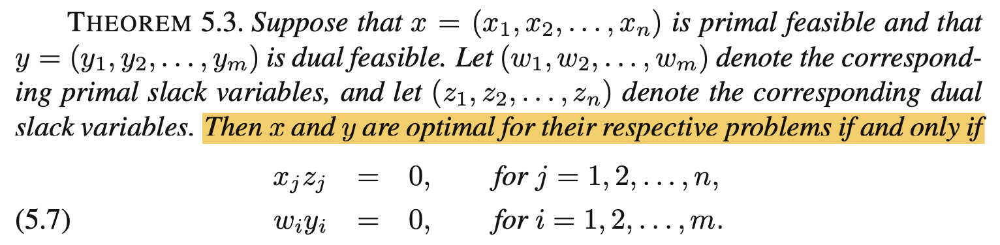

Linear Programming
Notation
We will use \bold x to indicate a vector, x_i to indicate the element of \bold x. The \leqslant, \geqslant comparators are element–wise comparison. \bold 0 is the zero vector.
Linear Programming
Scenario. Production Problem
Consider a factory that has a limited amount of resources and produces a finite number of products.
Variables
- m
- Total number of kinds of resources
- n
- Total number of products
- b_i
- Amount we have for resource i
- c_j
- Unit profit of product j
- a_{ij}
- Amount of resource i needed to make 1 unit of product j
- x_j Decision Variable
- Number of product j to make, 1\leqslant j\leqslant n, non negative
Objective
We want to maximize the total profit, which is the sum of profits over all products:
\max \sum_{1\leqslant j\leqslant n}c_jx_jConstraints
For each resource i, we can’t use more than what we have:
\sum_{1\leqslant j\leqslant n}a_{ij}x_j\leqslant b_i\hspace{2em}1\leqslant i\leqslant mWe shouldn’t make negative number of products either:
x_j\geqslant 0, \forall j
Matrix-Vector Form
\begin{aligned}
\max &&& c^T\bold x\\
\text{subject to}&&&\begin{aligned}
A\bold x &\leqslant \bold b\\
\bold x&\geqslant \bold 0
\end{aligned}
\end{aligned}Where c, x are vectors in \R^m:
\bold c=\begin{bmatrix}
c_1\\c_2\\\vdots\\c_m
\end{bmatrix}
\hspace{1em}
\bold x=\begin{bmatrix}
x_1\\x_2\\\vdots\\x_m
\end{bmatrix}and A is a m\times n matrix:
A = \begin{bmatrix}
a_{11} & a_{12} & \cdots & a_{1n}\\
a_{21} & a_{22} & \cdots & a_{2n}\\
\vdots & & \ddots & \vdots\\
a_{m1} & a_{m2} & \cdots & a_{mn}
\end{bmatrix}Example.1 2D Example
The feasible region for this linear program
\begin{aligned}
\max &&& 8x_1 + 5x_2\\
\text{subject to}&&&\left\{\begin{aligned}
2x_1 + x_2 & \leqslant 6\\
2x_1 + 2x_2 & \leqslant 8\\
x_1, x_2 & \geqslant 0\\
\end{aligned}\right.
\end{aligned}
Def. Standard form of a linear program
For A\in\R^{m\times n}, \bold{c, x}\in \R^n, \bold b\in \R^m
\begin{aligned}
\max &&& \bold c^T\bold x\\
\text{subject to}&&&\begin{aligned}
A\bold x &\leqslant \bold b\\
\bold x&\geqslant \bold 0
\end{aligned}
\end{aligned}Duality - Resource Buyer
Consider the resource buyer perspective. For each resource i, we have a bid price y_i.
Objective
Minimize total cost.
\min \sum_{1\leqslant i \leqslant m} b_i y_iConstraint
For each product j, the price to sell all the resources needed should be greater than the profit of j.
\sum_{1\leqslant i\leqslant m} a_{ij} y_i\geqslant c_jMatrix-Vector Form
\begin{aligned}
\max &&& \bold b^T\bold y\\
\text{subject to}&&&\begin{aligned}
A^T\bold y &\geqslant \bold c\\
\bold y&\geqslant \bold 0
\end{aligned}
\end{aligned}This is the Dual problem of the original Primal problem
Theorem. Weak & Strong Duality
For each feasible solution \bold x of the primal problem, and each feasible solution \bold y of the dual problem, we have the following:
Weak Duality
\bold c^T\bold x\leqslant \bold b^T\bold y
Strong Duality
\bold c^T\bold x^* = \bold b^T\bold y^*
- all linear programs have strong duality if optimal solutions \bold x^*, \bold y^* exists for primal and dual
Proof. (Weak Duality)
Let \bold x, \bold y be feasible solutions for the primal and dual problem respectively.
Then by definition of feasible, we have
A\bold x \leqslant \bold b\hspace{2em} \bold x\geqslant 0\hspace{2em} A^T \bold y \geqslant \bold c\hspace{2em} \bold y\geqslant 0We need to show \bold c^T\bold x\leqslant \bold b^T\bold y. Plug in the definition of c^T:
\bold c^T\bold x\leqslant {\underbrace{(A^T\bold y)}_{\text{bound }\bold c}}^T\bold x = \bold y^TA\bold x\leqslant \bold y^T\underbrace{\bold b}_{\text{bound }A\bold x} = \bold b^T\bold yTheorem. Complementary Slackness

The slack variables are just a vector that turns \leqslant, \geqslant in the constraints into equality:
\begin{aligned}
\bold w &= \bold b - A\bold x\\
\bold z &= A^T\bold y - \bold c\\
\end{aligned}- Basically primal solution times dual slack is 0, dual solution times primal slack is also 0 for linear programs. The optimal objective \zeta and \xi are equal.
Optimization Output / Infer Dual Results from Primal
A linear program can have the following statuses:
- Finite, we have a finite optimal solution
- Unbounded, the objective can go to \pm\infty
- Infeasible, no solution exists that satisfies all the constraints
By strong duality, the results of Primal & Dual are linked:
Sensitivity
Suppose we change one of the constraints b_i to b_i + \Delta b_i.
Let \zeta be the value of the objective function.
If \Delta b_i > 0, then the new optimal \zeta_{new} should be at least the original solution because we loosened the constraint.
\zeta_{new} \geqslant\zeta_{old}If \Delta b_i < 0, the original \bold x^* might not be in the new feasible region. If there’s another solution, it should be at most the original because we tightened the constraint.
\zeta_{new}\leqslant \zeta _{old}\qquad{\text{if feasible}}